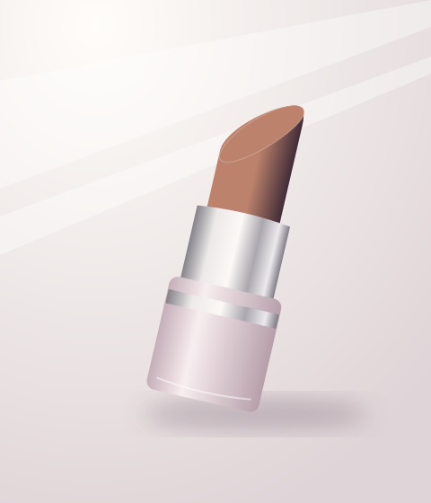
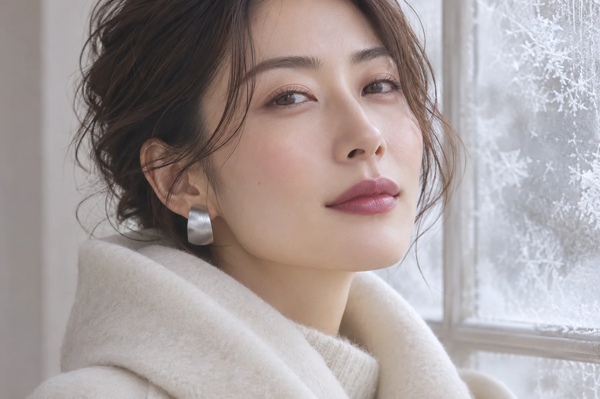
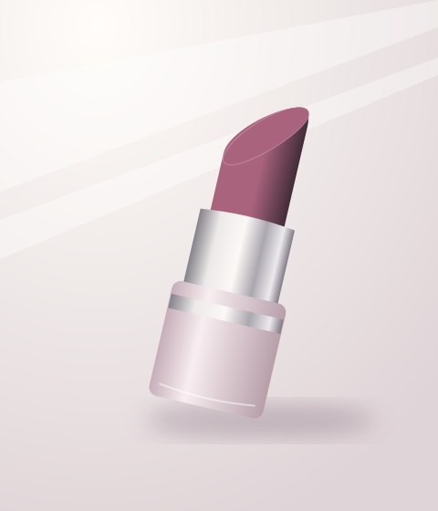
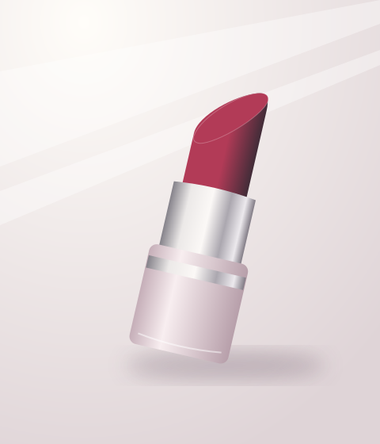
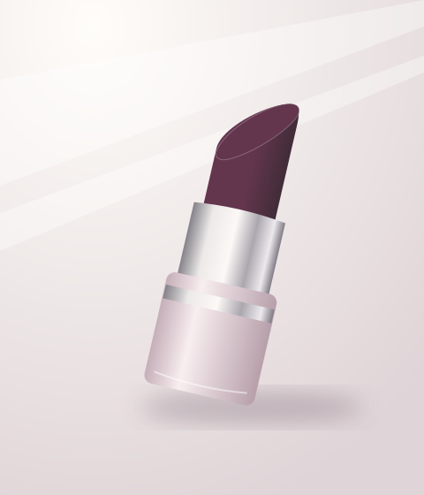
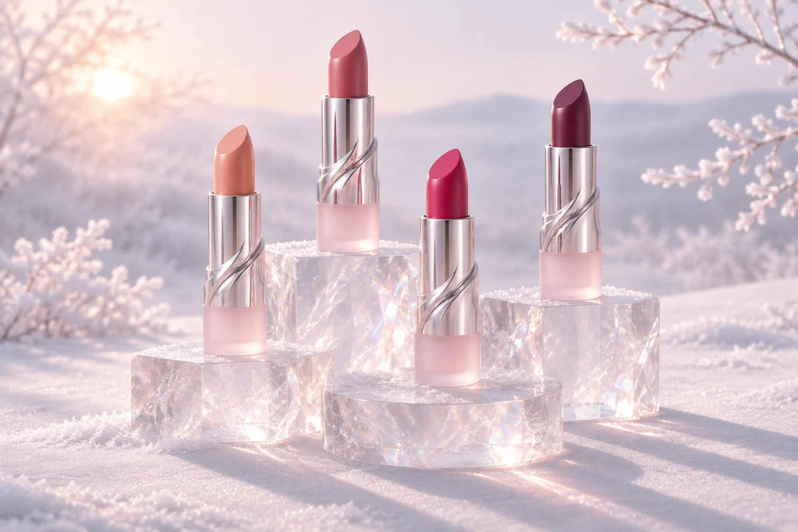

NO. 01
Snow Veil
スノーヴェール
透け感のあるピーチベージュ。
やわらかく、肩の力が抜けた印象に。

01 / COLLECTION CONCEPT
冬の朝、雪に反射する淡い光。
澄んだ空気の中で、ふと目に留まる静かなきらめき。
その一瞬を、異なる表情の4色に映しました。
02 / THE WINTER PALETTE

スノーヴェール
透け感のあるピーチベージュ。
やわらかく、肩の力が抜けた印象に。

フロステッドローズ
青みを含んだ、くすみローズ。
静かに華やぐ、上品な印象に。

ベリーグリーム
光を含んだような鮮やかなラズベリー。
顔まわりを明るく、凛とした印象に。

プラムダスク
夕暮れを思わせる深いプラム。
シックで余韻のある印象に。
03 / FIND YOUR COLOR
今日の気分に合う冬のリップを、
2つの質問から見つけてみませんか。
04 / PRODUCT DETAIL
LUNÉA 冬限定リップスティック
全4色 ／ 各 ¥3,300（税込）
ポートフォリオ用の架空商品です。
05 / THE WINTER LOOK
やわらかなローズを唇に。
冬の装いに、静かな彩りを添えて。
PORTFOLIO DEMO
架空のキャンペーンサイトです。商品の購入はできません。
このボタンはデモです。購入ページへの移動はありません。